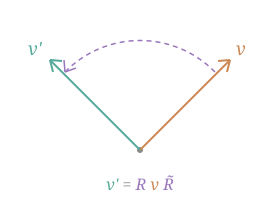
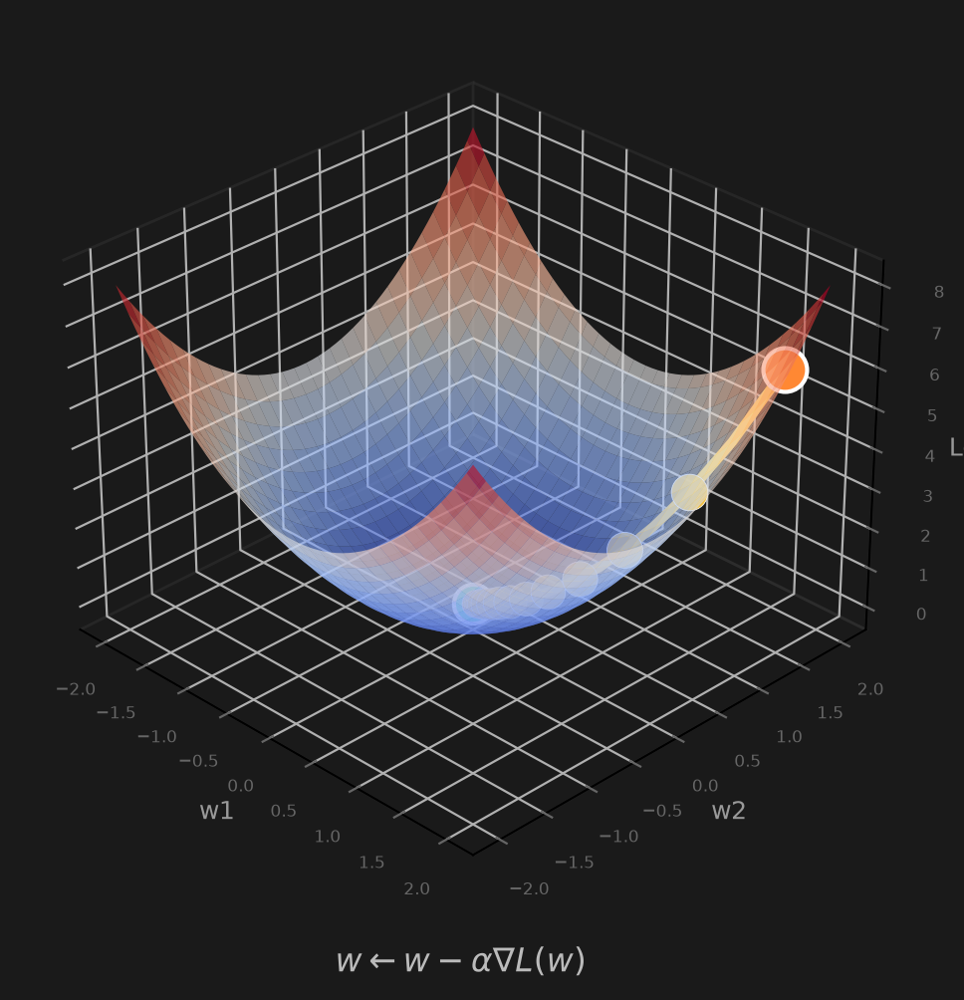

I like writing C, messing with Linux, and suckless software. Also a math buff, mostly into linear algebra and geometric algebra. Right now I'm running Gentoo on an M1 MacBook Air with dwl and the fairydust kernel. Most of the stuff I make is small terminal tools.
This is my website :)